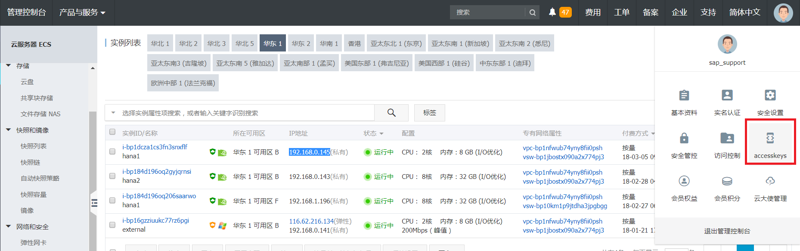

The next sections contain information about how to prepare the infrastructure.
To set up your infrastructure, the following components are required:
1 Virtual Private Cloud (VPC) network; Virtual Private Cloud
2 Elastic Compute Service (ECS) instances in different zones of the same VPC; Elastic Compute Service
2 Elastic Network Interfaces (ENI) - one for each ECS instance; Elastic network interfaces
Alibaba Cloud specific Virtual IP Resource Agent and STONITH device;
NAT Gateway and SNAT entry; NAT Gateway
First, create a VPC via Console→Virtual Private Cloud→VPCs→Create VPC. In this example, a VPC named suse_hana_ha in the Region EU Central 1 (Frankfurt) has been created:
There should be at least two VSwitches (subnets) defined within the VPC network. Each VSwitch should be bound to a different Zone. In this example, the following two VSwitches (subnets) are defined:
Switch1 192.168.0.0/24 Zone A, for SAP HANA Primary Node;
Switch2 192.168.1.0/24 Zone B, for SAP HANA Secondary Node;
 |
Two ECS instances are created in different Zones of the same VPC via Console→Elastic Compute Service ECS→Instances→Create Instance. Choose the "SUSE Linux Enterprise Server for SAP Applications" image from the Image Market place.
In this example, two ECS instances (hostname: hana0 and hana1) are created in the Region EU Central 1, Zone A and Zone B, within the VPC: suse_hana_ha, with SUSE Linux Enterprise Server for SAP Applications 12 SP2 image from the Image Market Place. Host hana0 is the primary SAP HANA database node, and hana1 is the secondary SAP HANA database node.
 |
Create two ENIs via Console→ Elastic Compute Service ECS→Network and Security→ENI, and attach one for each ECS instance, for HANA System Replication purposes. Configure the IP addresses of the ENIs to the subnet for HANA System Replication only.
In this example, the ENIs are attached to the ECS instances hana0 and hana1. In addition, the IP addresses are configured as 192.168.0.83 and 192.168.1.246 within the same VSwitches of hana0 and hana1, and put into the VPC: suse_hana_ha
 |
Meanwhile, within the Guest OS, /etc/hosts should also be configured.
According to the example at hand, run the following two commands on both sites:
echo "192.168.0.82 hana0 hana0" >> /etc/hosts echo "192.168.1.245 hana1 hana1" >> /etc/hosts
The output looks as follows:
Now create an NAT Gateway attached to the given VPC. In the example at hand, an NAT Gateway named suse_hana_ha_GW has been created:
 |
After having creating the NAT Gateway, you need to create a corresponding SNAT entry to allow ECS instances within the VPC to access public addresses on the Internet.
Note
An Alibaba Cloud specific STONITH device and Virtual IP Resource Agent are mandatory for the cluster. They need to access Alibaba Cloud OpenAPI through a public domain.
In the example at hand, two SNAT entries have been created, for ECS instances located in a different network range:
 |
Download the STONITH fencing software with the following command:
wget http://sap-automation-cn-beijing.oss-cn-beijing.aliyuncs.com/software/aliyun-pacemaker_new.zip
For an HA solution, a fencing device is an essential requirement. Alibaba Cloud provides its own STONITH device, which allows the servers in the HA cluster to shut down the node that is not responsive. The STONITH device leverages Alibaba Cloud OpenAPI underneath the ECS instance, which is similar to a physical reset / shutdown in an on-premise environment.
Extract the package and install the software.
tar –xvf aliyun-ecs-pacemaker.tar.gz ./install
 |
Install Alibaba Cloud OpenAPI SDK.
pip install aliyun-python-sdk-ecs aliyun-python-sdk-vpc aliyuncli
 |
Configure Alibaba Cloud OpenAPI SDK and Client.
aliyuncli configure
Get your Access Key as shown below:
|  |